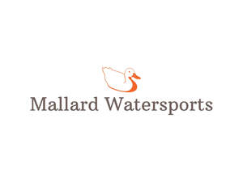

Trade Mark Journal No.2025/040 3 October 2025
UK00004267800 22 September 2025 (12,22,25,28,39,41)

- Class 12
- Kayak paddles; Kayaks; Cartop canoe and kayak carrier kits; Paddles [kayak equipment]; Canoe paddles; Paddle boats; Paddles for canoes; Canoes; Water deflecting skirts [kayak equipment]; Ski boats; Boat rudders; Watercraft; Collapsible watercraft; Collapsible boats; Boats; Water bikes; Rafts; Buoyancy bags adapted for use with watercraft; Oars.
- Class 22
- Sails for ski sailing; Sails for boats; Windsurfing sails; Sails for windsurfing; Sails for kite skiing.
- Class 25
- Clothes for sport; Clothing for sports; Sports clothing; Clothes for sports; Footwear for sport; Footwear for use in sport; Sports garments; Footwear for sports; Sports footwear; Clothing; Leisure clothing; Clothing for leisure wear; Parts of clothing, footwear and headgear; Boots for sport; Sport coats; Sports jackets; Sports shoes; Jackets [clothing]; Sportswear.
- Class 28
- Paddleboards; Surf skis; Stand-up paddleboards; Swim floats for recreational use; Swimming equipment; Sports equipment; Outdoor toys; Sports equipment for pets; Sporting articles and equipment.
- Class 39
- Rental of rowing boats; Boat rental; Rental of canoes; Boat cruises; Boat transportation; Boat hire; Rental of boats; River transport by boat; Boat transport; Organization of travel and boat trips; Hire of boats; Rental of water craft; Arranging and conducting canoe expeditions; Transport by boat; Chartering of watercraft, yachts, ships, boats and water vehicles; Charter of boats.
- Class 41
- Adventure training for children; Rental of sports equipment and facilities; Rental of sports or exercise equipment; Rental of sports equipment; Provision of facilities for outdoor recreational activities; Hire of equipment for sports; Rental of sports equipment, except vehicles; Sports equipment (Rental of -), except vehicles; Sporting and recreational activities; Sports activities; Gym activity classes; Exercise classes; Conducting of classes; Providing courses of instruction at high school level; Arranging of classes; Conducting fitness classes; Exercise and fitness classes; Conducting distance learning instruction at the college level; Conducting classes in exercise; Conducting classes in nutrition; Providing courses of instruction at post-graduate level; Conducting distance learning instruction at the university level; Production of course material distributed at vocational lectures; Organisation of examinations to grade level of achievement; Educating at university or colleges; Conducting physical fitness conditioning classes; Educating at universities or colleges; Instruction in group exercise; Arranging and conducting of classes; Conducting of instructional, educational and training courses for young people and adults; Organisation of sports installations for figure and speed skating championships; Coaching; Coaching [training]; Sports coaching; Coaching services; Personal coaching [training]; Sports coaching services; Training in sports; Training.
Emil Laurence Conway